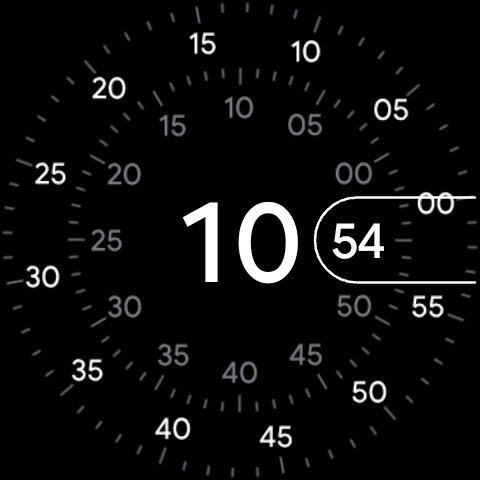

Wear OS ile ilgili son güncellemeleri takip ediyorsanız, saat kadranlarının oluşturulma yöntemindeki değişikliği duymuş olabilirsiniz. Wear OS 5 ile Google, Google Play Store'a saat kadranı gönderimleri için Saat Kadranı Formatını (WFF - Watch Face Format) resmi olarak zorunlu standart olarak belirledi. Eski, yoğun kod içeren saat kadranları bu yeni yaklaşımın lehine olacak şekilde kademeli olarak kullanımdan kaldırılıyor.
Peki Saat Kadranı Formatı tam olarak nedir ve Google neden bu kararı aldı? Bu makalede; WFF'nin arkasındaki teknik nedenleri, akıllı saatlerin pil ömrüne nasıl fayda sağladığını ve bunun geliştiriciler ile son kullanıcılar için ne anlama geldiğini açıklayacağız.

Saat Kadranı Formatı (WFF) Nedir?
Eski Wear OS sürümlerinde saat kadranları tam teşekküllü Android uygulamalarıydı. Java veya Kotlin dilinde yazılır, APK dosyalarının içine paketlenir ve doğrudan saat üzerinde özel kodlar çalıştırırlardı. Geliştiriciler tam özgürlüğe sahipti, ancak bu durum saat kadranlarının akrep ve yelkovanı çizmek, komplikasyonları takip etmek ve animasyonları görüntülemek için sürekli olarak aktif kod döngüleri çalıştırması anlamına geliyordu.
Saat Kadranı Formatı (WFF), Samsung ile ortaklaşa geliştirilen, bildirimsel (declarative) ve XML tabanlı bir çerçevedir. Yürütülebilir kod içermek yerine bir WFF saat kadranı; yalnızca görsel düzeni (renkler, metin yolları, resim yerleşimleri ve matematiksel ifadeler) tanımlayan metin tabanlı bir yapılandırma dosyasıdır. Wear OS işletim sistemi bu XML dosyasını okur ve kadranı yerel (native) olarak çizer.
Pil Ömründe Devrim
WFF özel arka plan kodları çalıştırmadığından, Wear OS sistemi saat kadranının çizilmesini düşük güçlü yardımcı işlemcilere (genellikle mikrodenetleyici veya MCU çipleri olarak adlandırılır) devredebilir. Bu sayede saat, güç tüketen ana uygulama işlemcisi uykudayken zamanı ve adım sayacını güncelleyebilir ve böylece muazzam miktarda pil tasarrufu sağlar.
Neden WFF: Temel Avantajlar
Kod tabanlı tasarımlardan bildirimsel XML profillerine geçiş yapmak, akıllı saat ekosistemi için birkaç önemli avantaj sağlar:
1. Önemli Ölçüde İyileştirilmiş Pil Ömrü
Geleneksel Java/Kotlin saat kadranları, ana sistem CPU'sunun sürekli uyanık kalmasını ve kare yenilemelerini işlemesini gerektiriyordu. WFF saat kadranları ise ana işlemcide sıfır yürütülebilir kod çalıştırır. Çizim görevlerini ultra düşük güçlü donanımlara kaydırarak WFF, akıllı saat pil ömrünü uzatmaya yardımcı olur; özellikle de Her Zaman Açık Ekran (AOD) modları kullanılırken.
2. Tavizsiz Güvenlik
WFF dosyaları derlenmiş ikili dosyalar (binary) yerine saf XML yapılandırmaları olduğundan, kötü amaçlı kod yürütemez, yerel dosya sistemlerine erişemez veya yetkisiz arka plan verileri iletemez. Kullanıcılar, güvenlik ihlalleri konusunda endişelenmeden Play Store'dan özel saat kadranları indirebilir.
3. Otomatik Performans Optimizasyonu
Wear OS bir WFF dosyası aldığında, kare hızlarını ve grafik işlemlerini yerel olarak yönetir. Google sistem grafik motorunu güncellediğinde, her WFF saat kadranı, orijinal yaratıcısının kodunu güncellemesine gerek kalmadan bu performans iyileştirmelerini ve optimizasyonlarını anında kazanır.
| Özellik karşılaştırması | Eski Saat Kadranları (Kotlin/Java) | Saat Kadranı Formatı (XML) |
|---|---|---|
| Yürütme Yöntemi | Arka planda özel ikili kod çalıştırır. | Wear OS tarafından yerel olarak ayrıştırılır ve çizilir. |
| Pil Etkisi | Yüksek (derin CPU uyku durumlarını engeller). | Çok Düşük (düşük güçlü yardımcı işlemcilere devreder). |
| Güvenlik Riski | Orta (standart uygulama güvenlik kontrolleri gerektirir). | Sıfır (kod yürütemez veya verilere erişemez). |
| Bakım | Yüksek (yeni API sürümleri için güncellemeler gerektirir). | Düşük (işletim sistemi değişiklikleriyle otomatik olarak güncellenir). |
Akıllı Saat Kullanıcıları İçin Ne Anlama Geliyor?
Eğer günlük bir akıllı saat kullanıcısıysanız, en belirgin değişiklik, yıllar önce satın aldığınız eski saat kadranlarının yeni Wear OS 5 cihazlarına yüklenemeyebilecek olmasıdır. Google artık Play Store'un Wear OS 5'teki saat kadranı indirmelerini WFF kullanılarak oluşturulanlarla sınırlandırmasını şart koşuyor.
Bu durum başlangıçta can sıkıcı görünse de kazanç oldukça açıktır: saat kadranları daha net görünecek, daha akıcı çalışacak, daha hızlı yüklenecek ve önemli ölçüde daha az pil tüketecektir. Tasarımcılar popüler tasarımlarını aktif olarak yeni XML standardına güncelliyorlar, bu nedenle favori kadranlarınız muhtemelen geliştirilmiş verimlilikle geri dönecektir.
Sonuç
Saat Kadranı Formatı (WFF) temsil ettiği değer bakımından Wear OS için önemli bir evrimsel adımdır. Ana işlemcide kod yürütülmesini ortadan kaldırarak ve tasarım düzenlerini XML ile standartlaştırarak Google ve Samsung, akıllı saatlerin en büyük iki şikayetini ele aldı: pil tüketimi ve yavaş performans. Akıllı saat tasarımının geleceği temiz, güvenli ve son derece verimli!